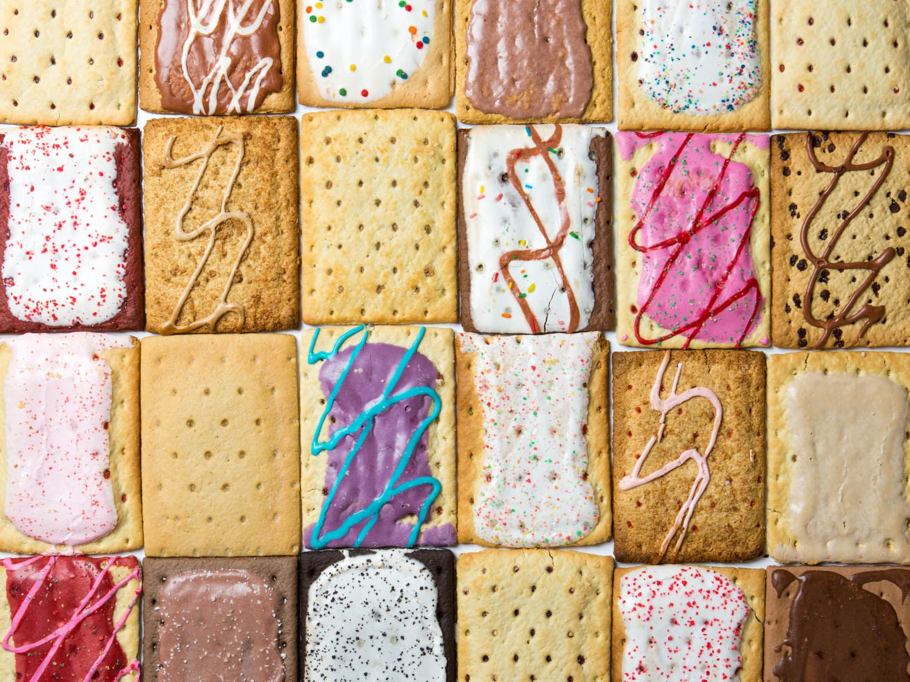

Poptarts

Description
If you can't make this, give up.
Ingredients
- Toaster - use the one you have. Don't have one? Ask your mom.
- Plate - unless you just like holding hot tarts.
- Poptarts - I won't tell you what kind to get, but if you choose certain flavors you'll probably lose friends.
- Cup - it's for milk
- Milk - it's for the cup. And tarts.
Steps
- Put Poptarts in Toaster - You want these fools hot but not burnt.
- Take Poptarts out of Toaster - Wouldn't make much sense to leave them in the toaster.
- Place Poptarts on Plate - or hold them in your hand you peasant.
- Pour Milk into Cup - pouring milk on the table won't keep the milk together.
- Serve - Dip that steamy rectangle into your milk, then bite it. It's better this way.